Gutters, roofs, sidingWhere the roof meets the wall.
Pick a problem
What is the rain doing?
Choose what you are seeing. Here is what it points to and what we look at first.
Services
Seamless gutters
Gutters are the main job. Roofing and siding follow below.
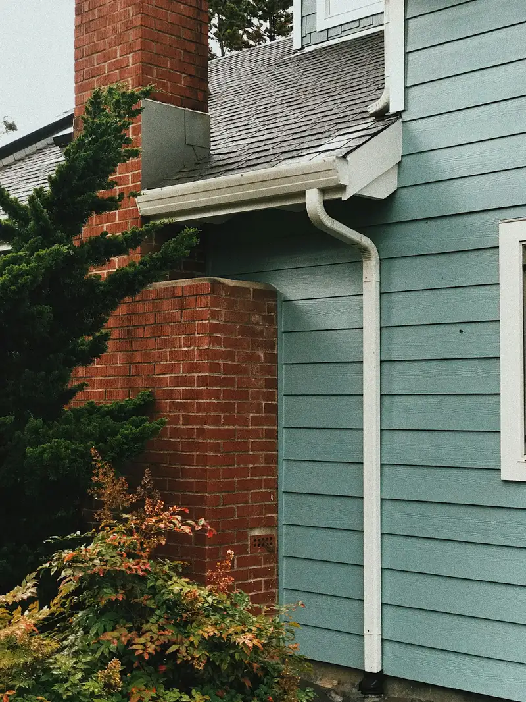
What seamless means
A seamless gutter is made at the house: one long length of metal, shaped and cut to match each stretch of roof edge. With no joints along the run, it has fewer places to drip. The only seams are at the corners and the downspouts.
When you need it
Old gutters drip at the joints, sag, overflow, or are past saving.
What is included
Runs made to fit each stretch of roof edge, with hangers, corners, end caps and downspouts.
How it goes
Each length is shaped and cut at the house to match its stretch of roof edge. Then we run water through it before we leave.
Common gutter and downspout sizes
Gutter width
5 inch or 6 inchThe bigger size is for large or steep roofs that shed a lot of water.
Downspouts
2 by 3 inch or 3 by 4 inchBigger downspouts empty a long run faster.
A few common colors
White
Black
Brown
Gray
Plenty of other colors too. Send a photo of your trim and we will help you match it.
Clean, repair or replace
Clean, repair or replace
A clogged gutter needs a cleaning, not a new gutter. A sagging run on sound wood needs new hangers. We will tell you which one you have.
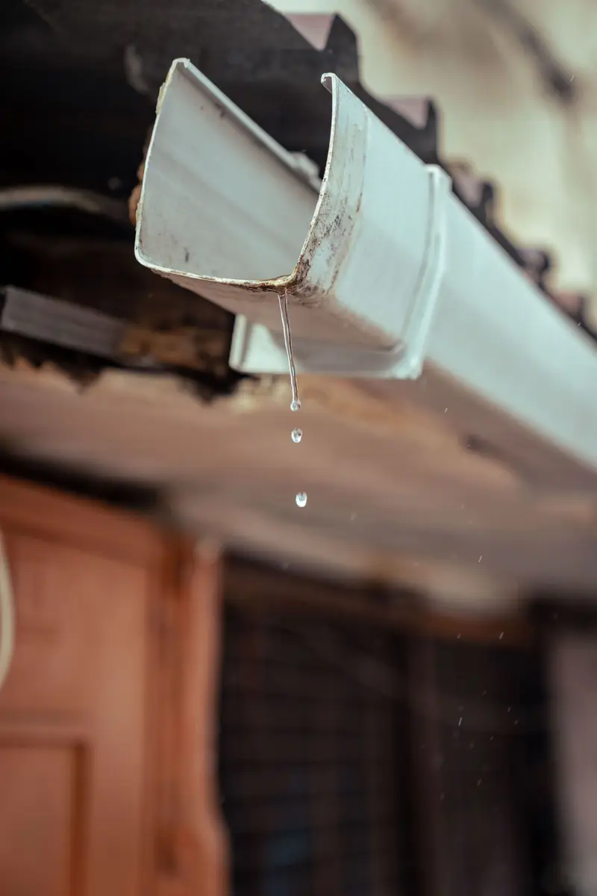
Clean
Leaves and grit out of the run, downspouts flushed clear.
Repair
New hangers, end caps or a corner that keeps leaking.
Replace
New seamless runs when the old ones are past saving.
Roofs and siding
More than gutters
Gutters hang where the roof meets the wall, so trouble in one often shows up in the others.
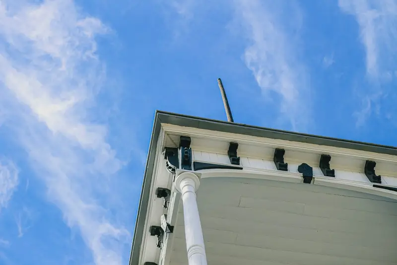
Roofing
Missing or curled shingles, loose flashing at a chimney, or a ceiling stain after rain. Describe what you can see without climbing up.
When you need it
Shingles lifted by wind, a drip near a vent pipe, or a stain on the ceiling after rain.
What we look at
The shingles, the flashing at the chimney and the roof edge.
How it goes
You tell us what you see from the ground. We take a look, then say whether a repair will hold or the roof needs more.
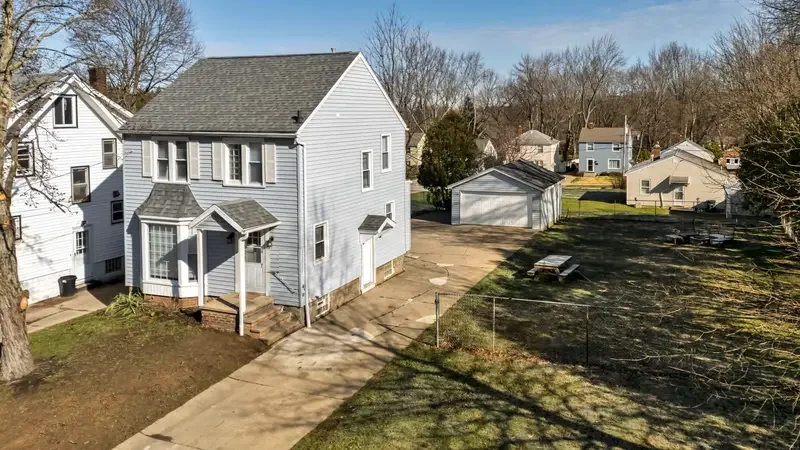
Siding
Panels loose or cracked after a storm, or stained where an overflowing gutter has been running down the wall.
When you need it
Siding is loose, cracked or stained, often below a gutter that overflows.
What we look at
The wall, and the gutter above it.
How it goes
If the gutter is the cause, we fix that first. Then we take care of the siding.
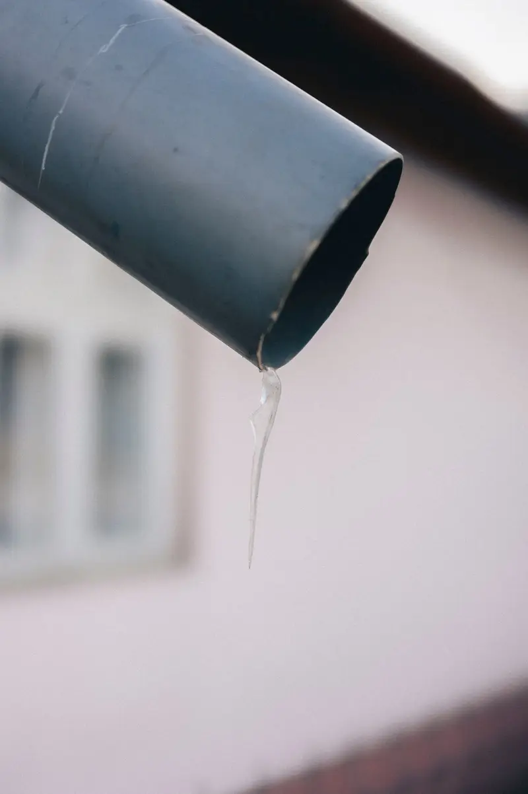
55.4 inof snow a year, on average, in Eau Claire.
Winter
Snow, ice and the eaves
Eau Claire averages 55.4 inches of snow a year. In cold places with deep snow, ice dams form at the eaves of heated, sloped roofs. The eaves are where the gutters hang.
Before the snow
Leaves and grit out of every run
Downspouts flushed clear
New hangers where the old ones have let go
Step by step
How it goes
Call or send a photo
Tell us what the rain is doing and where.
We look at the whole run
From the roof edge down to where the water lands.
We tell you what it needs
Clean, repair or replace, and why.
We do the work
Then we run water through it before we leave.
Get ready for our visit
A few small things make the first look quicker.
Note where water spills, drips or pools when it rains. A photo helps.
Clear a path along the house so we can reach each downspout.
Point out any ceiling stains or damp spots inside.
Tell us about gates, and keep pets inside while we work.
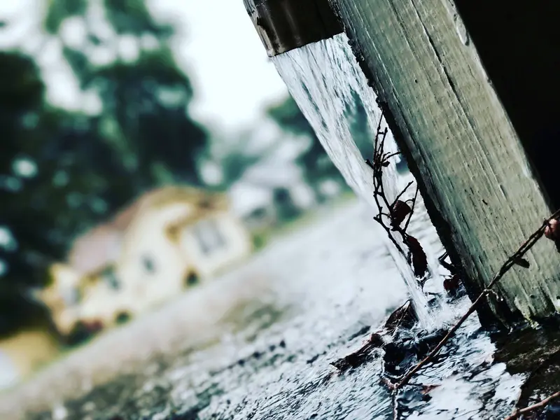
Downspouts
Where the water lands
We look at where each downspout lets out, and whether it needs to carry water farther from the wall.
Gallery
Rooflines, runs and rain
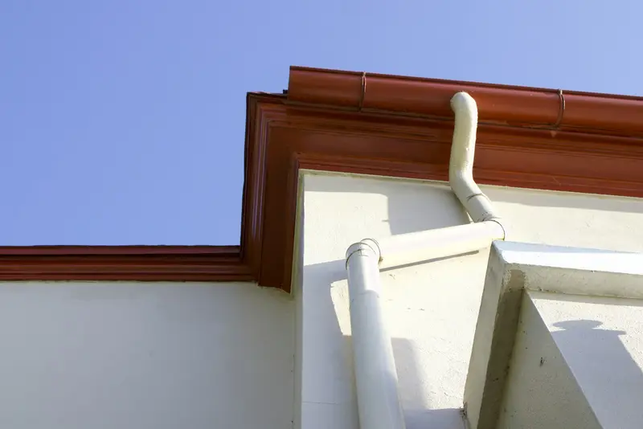
Corner and downspout
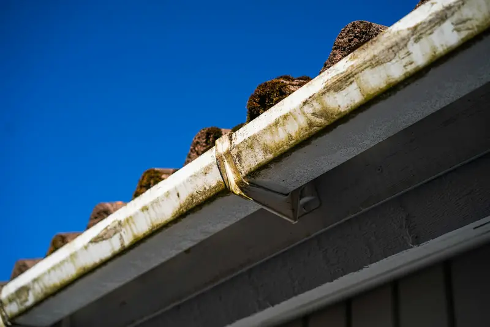
Due for a cleaning
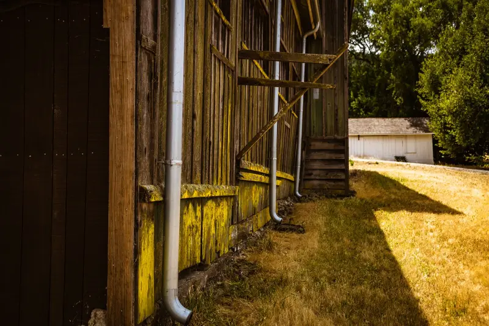
Overflow
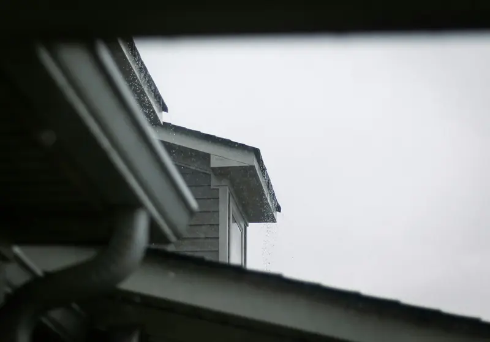
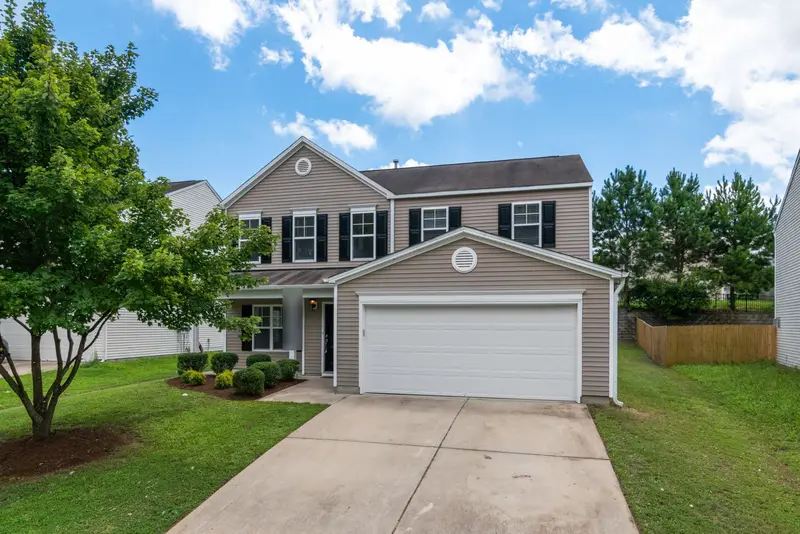
Front of the house
Where we work
Eau Claire and around
If your town is close and not listed, call and ask.
Eau Claire
Altoona
Lake Hallie
Chippewa Falls
Fall Creek
Augusta
Menomonie
Contact
Tell us what you see
Name, phone and what is happening at the house when it rains. We call back to talk it through.